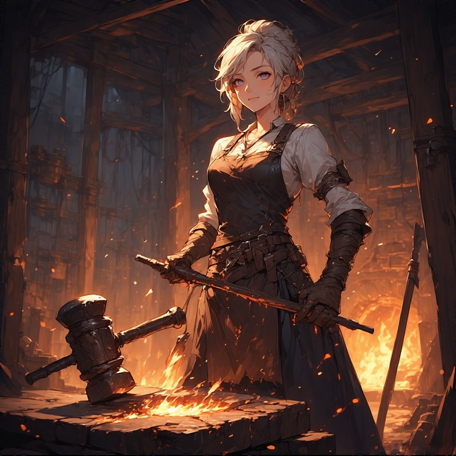

The United Radical South States
Un pays figé dans le temps.
 Tout ce qui reste...
Tout ce qui reste...
 Tout ce qui reste...
Tout ce qui reste...
Wilderness
«Deathclaw» (?)
Prédateurs apex des terres irradiées, ces créatures reptiliennes ont évolué rapidement après
l'effondrement. Leurs griffes acérées peuvent trancher l'acier, et leur intelligence primitive les rend
dangereusement imprévisibles. Les survivants racontent qu'ils chassent en meute et qu'ils sont capables
d'apprendre des tactiques humaines. Éviter à tout prix - aucun groupe armé n'a jamais survécu à une
rencontre directe.
Curieuse créature
Curieuse créature
Curieuse créature
Curieuse créature
 Curieuse créature
Curieuse créature
«Red Spider» (1)
Ancienne agent d'élite reconvertie en mercenaire, Red Spider maîtrise l'art de l'infiltration et de
l'élimination silencieuse. Sa combinaison rouge écarlate et son masque arachnéen sont devenus
légendaires dans les territoires disputés. Elle ne travaille que pour les plus offrants et ses contrats
se terminent toujours par la mort de sa cible. Certains murmurent qu'elle aurait des liens avec les
anciens services secrets de l'URSS.
 Femme fatale
Femme fatale
«Black Widow» (1)
Maîtresse des ombres et de l'espionnage, Black Widow opère depuis les ruines des anciens centres de
commandement. Experte en manipulation et chantage, elle tire les ficelles des conflits territoriaux
depuis l'ombre. Son réseau d'informateurs s'étend à travers toutes les factions survivantes. On dit
qu'elle connaît tous les secrets de l'ancien monde et qu'elle les utilise pour façonner le nouveau.
 Elle trouve toujours un chemin
Elle trouve toujours un chemin
«La charognarde» (1)
Chasseuse impitoyable des terres sauvages, la Charognarde traque les faibles et les blessés avec une
précision mortelle. Armée d'un arc composite de fabrication artisanale et vêtue de peaux de ses
victimes, elle représente la survie à l'état pur. Les rares témoins de ses chasses racontent qu'elle
murmure des prières aux morts avant de décocher ses flèches. Nul ne sait si elle était humaine avant
l'effondrement.
Elle ne peuvent pas être sauvées
«Soeur Pyre» (2)
Dernière prêtresse d'un culte du feu né des cendres de l'ancien monde, Sœur Pyre porte en elle la flamme
sacrée de la purification. Elle croit que seul le feu peut nettoyer les souillures de la catastrophe et
rendre la terre à son état originel. Ses rituels pyromaniaques terrorisent les communautés de
survivants, mais certains cherchent sa bénédiction, espérant que ses flammes les protégeront des
radiations.
 Elle ne peuvent pas être sauvées
Elle ne peuvent pas être sauvées
 Elle ne peuvent pas être sauvées
Elle ne peuvent pas être sauvées
Aube Noire
Leader (1)
Commandante suprême de la faction Aube Noire, cette leader charismatique a unifié les clans dispersés
sous une bannière commune. Ancienne officier militaire, elle a adapté les tactiques d'avant-guerre aux
réalités du nouveau monde. Son camp fortifié représente l'un des derniers bastions de civilisation
organisée. Elle rêve de restaurer l'ordre et la technologie, mais ses méthodes autoritaires divisent
même ses propres troupes.
 La leader du camp
La leader du camp
Forgeronne (3)
Gardiennes des secrets métallurgiques de l'ancien monde, les forgeronnes de l'Aube Noire maintiennent
les équipements essentiels à la survie du camp. Dirigées par une maître-artisane qui prétend avoir
appris son art dans les usines souterraines d'avant la guerre, elles transforment les déchets
radioactifs en outils et armes utilisables. Leur forge résonne jour et nuit, symbole de résistance
contre la déchéance technologique.
La chef des forgeronnes
Une employée

Une employée
Ancienne Capitale